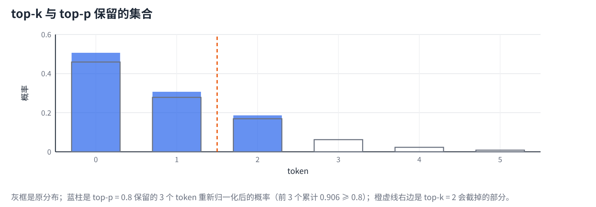
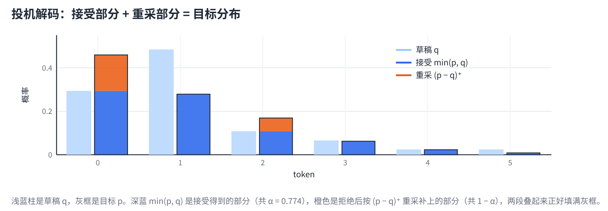
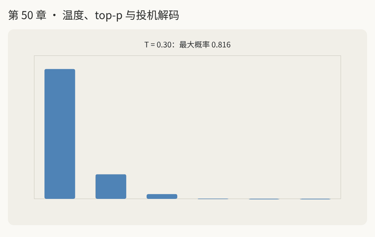

第 50 章 · 解码与采样：温度、top-k / top-p、beam search、投机解码、约束解码
本地运行
git clone https://github.com/wikieden/math-and-eval-stats
cd math-and-eval-stats/code/notebooks
pip install jupyterlab torch numpy
jupyter lab ch50_decoding.ipynb也可以下载后直接用 VS Code 打开 .ipynb 运行。需要 GPU 的章节在 Colab 里选「代码执行程序 → 更改运行时类型 → GPU」。
本章回答：模型给出下一个 token 的概率以后，怎么挑？温度、top-k、top-p 各在改什么？为什么每步选最大不等于整句最好？投机解码用小模型打草稿、大模型验收，为什么输出分布和只用大模型一模一样？一次打几个草稿最划算？怎么保证输出一定是合法的 JSON？
讲解日期：2026-11-25 · 上一章：第 49 章 量化的数学 · 下一章：第 51 章 后训练的数学
对应原文：Fast Inference via Speculative Decoding（Leviathan 2022）llm-full-stack/materials/text/papers/speculative-decoding-leviathan-2211.17192.txt（接受率 β = 1 − D_LK(p, q)，定理 3.5 L195–L204；接受后重采的正确性与期望 token 数 §3）；Accelerating LLM Decoding with Speculative Sampling（Chen 2023）llm-full-stack/materials/text/papers/speculative-sampling-chen-2302.01318.txt；Medusallm-full-stack/materials/text/papers/medusa-2401.10774.txt；EAGLE-3llm-full-stack/materials/text/papers/eagle3-2503.01840.txt
本章缩写：T = temperature（温度）；top-k = 只保留概率最大的 k 个；top-p（nucleus）= 只保留累计概率达到 p 的最小集合；beam = 束搜索保留的候选数；p = 目标（大）模型的分布；q = 草稿（小）模型的分布；α = 接受率；γ = 一次提议的草稿 token 数。全部缩写见 附录 · 缩写与术语表
讲解
第一步：温度：把分布变尖或变平（2026-11-25）
T < 1 更尖（更确定），T > 1 更平（更多样），T → 0 就是贪心（argmax）。
例子（6 个 token 的 logits [2, 1.5, 1, 0, −1, −2]）：
| T | 分布 |
|---|---|
| 0.5 | [0.656, 0.241, 0.089, 0.012, 0.002, 0.000] |
| 1.0 | [0.459, 0.278, 0.169, 0.062, 0.023, 0.008] |
| 2.0 | [0.321, 0.250, 0.195, 0.118, 0.072, 0.043] |
温度和第 37 章注意力的 √d、第 34 章的“熵”是同一回事：除以 T 就是把 logits 缩放。
一句话：温度把 logits 除以 T：小于 1 变尖、大于 1 变平、趋于 0 就是贪心。
第二步：top-k 与 top-p：截掉长尾（2026-11-25）
一个词表有十几万个 token，长尾里每个概率都很小，但加起来不小；随便采到一个就可能出离谱的词。
- top-k：只留最大的 k 个，重新归一化；
- top-p（nucleus）：按概率从大到小累加，留下累计刚到 p 的最小集合，重新归一化。
例子（T = 1 的分布）：
| 规则 | 结果 |
|---|---|
| top-k = 2 | [0.622, 0.378, 0, 0, 0, 0] |
| top-p = 0.8 | [0.506, 0.307, 0.186, 0, 0, 0] |

图 50-1 · 同一个分布：灰框是原概率；蓝色是 top-p = 0.8 保留并重新归一化后的概率（3 个），橙虚线是 top-k = 2 的边界top-p 的好处是自适应：模型很确定时（一个 token 占 0.95）只留 1 个，不确定时留很多；top-k 不管分布形状总是 k 个。实践中常组合：温度 → top-k → top-p，再加 min-p（低于最大概率某个比例的都截掉）。
一句话：top-k 留固定个数，top-p 留累计概率够 p 的最小集合（随分布自适应）；都要重新归一化。
第三步：贪心不一定得到概率最大的整句：beam search（2026-11-25）
例子（两步的小树：第一步 A 0.6 / B 0.4；A 之后 x 0.4、y 0.3、z 0.3；B 之后 x 0.9、y 0.1）：
| 方法 | 结果 | 整句概率 |
|---|---|---|
| 贪心（每步选最大） | A → x | 0.6 × 0.4 = 0.24 |
| beam 宽 2（保留两个前缀） | B → x | 0.4 × 0.9 = 0.36 |
第一步选 A 看起来最好，但 A 之后的分布很分散；B 之后几乎确定。beam search 保留 b 个最好的前缀，每步扩展再留 b 个。
beam search 适合有标准答案的任务（翻译、语音识别）；开放式生成时概率最大的句子往往重复、乏味，所以聊天模型用采样。
一句话：每步最大 ≠ 整句最大；beam search 保留多个前缀按整句概率比，适合有标准答案的任务。
第四步：投机解码：草稿 + 验收，输出分布不变（2026-11-25）
decode 是带宽受限的（第 47 章）：大模型一次前向处理 1 个 token 和处理 5 个 token 几乎一样慢。于是让小模型 q 先连续猜 γ 个，大模型一次前向并行验收：
- 草稿 x ~ q，以概率 min(1, p(x)/q(x)) 接受；
- 拒绝时从 norm(max(0, p − q)) 重采一个，后面的草稿作废。
为什么分布不变：输出 x 的概率 = q(x)·min(1, p(x)/q(x)) + (1 − α)·norm(max(0, p − q))(x) = min(p, q)(x) + max(0, p − q)(x) = p(x)，其中 α = Σmin(p, q) 是接受率（Leviathan 定理 3.5，L195–L204）。
例子（p 是上面 T = 1 的分布，q 是另一个分布）：
| 分布 | |
|---|---|
| 目标 p | [0.4592, 0.2785, 0.1689, 0.0621, 0.0229, 0.0084] |
| 草稿 q | [0.2938, 0.4844, 0.1081, 0.0656, 0.0241, 0.0241] |
| 接受—重采后 | [0.4592, 0.2785, 0.1689, 0.0621, 0.0229, 0.0084]（和 p 最大差 5.6 × 10⁻¹⁷） |
接受率 α = 0.7738。每个草稿独立以概率 α 被接受时，一次大模型前向期望产出
| γ | 1 | 4 | 8 |
|---|---|---|---|
| 期望 token 数 | 1.77 | 3.19 | 3.98 |
γ 越大收益递减（后面的草稿很可能已经被前面的拒绝作废），而草稿模型的开销线性增长，所以 γ 一般取 3–8。Medusa 在大模型上加几个预测后续 token 的头代替小模型，EAGLE 用大模型的特征训一个轻量草稿头。

图 50-2 · 每个 token 的 p（灰框）和 q（蓝柱）；min(p, q)（深蓝）是接受得到的部分，max(0, p − q)（橙）是拒绝后重采补上的部分，两者叠起来正好等于 p一句话：投机解码按 min(1, p/q) 接受、按 (p − q)⁺ 重采，输出分布精确等于 p；每次大模型前向期望得到 (1 − α^{γ+1})/(1 − α) 个 token。
第五步：约束解码：不合法的 token 直接置零（2026-11-25）
要输出合法的 JSON、只从给定选项里选，就在每一步把不允许的 token 的 logit 设成 −∞（概率置 0），再归一化。允许哪些 token 由一个状态机或文法决定（比如 JSON 里刚写完 "key" 后只允许 :）。
例子（只允许 token 2、3、4）：[0, 0, 0.665, 0.245, 0.090, 0]。
注意：这改变了分布（只在合法集合里按原比例重新归一化），可能让模型被迫走进它本来不会去的路径，质量会受影响；好的做法是让提示词本身也引导模型往合法格式走。
场景代码：Hugging Face 的采样参数（真实参数名；本书环境没装 transformers，没跑过）：
out = model.generate(**inputs, do_sample=True, temperature=0.7, top_k=50, top_p=0.9,
assistant_model=draft_model) # 传入草稿模型就启用投机解码
一句话：约束解码每步把非法 token 置零再归一化，保证格式合法，但会改变分布。
动画演示：投机解码的接受与重采

可交互版：animations/50-decoding.html（下拉切换“温度 / top-p / 投机解码”；滑块调参数）。
怎么看：
- 温度：6 根柱子随 T 变尖或变平（第一步）；
- top-p：从最高的柱子开始累加，阴影部分是保留的集合，其余变灰（第二步）；
- 投机解码：滑块调草稿分布和目标分布的差距，深蓝是接受部分、橙色是重采部分，叠起来始终等于灰框 p；右上角是 α 和 γ = 4 时的期望 token 数（第四步）。
练习与作答记录
题 1（第二步）：分布 [0.5, 0.2, 0.15, 0.1, 0.05]，top-p = 0.7 保留哪几个？归一化后是多少？
作答：（待作答）
题 2（第四步）：p = [0.6, 0.4]、q = [0.3, 0.7]，接受率 α 是多少？草稿是第 2 个 token 时被接受的概率是多少？被拒后重采的分布是什么？
作答：（待作答）
题 3（第四步）：α = 0.6，γ = 3 时每次大模型前向期望得到几个 token？γ 从 3 加到 6 能多得多少？
作答：（待作答）
口诀
温度除 logits，小尖大平零贪心；
top-k 留个数，top-p 留够概率、随分布伸缩；
每步最大不等于整句最大，beam 保留多个前缀；
投机解码 min(1, p/q) 接受、(p−q)⁺ 重采，分布不变；
期望 token 数 (1 − α^{γ+1})/(1 − α)；约束解码非法置零。
本章复习卡片
ST164（温度、top-k、top-p；贪心 vs beam）、ST165（投机解码为什么不改变分布）、ST166（接受率与期望 token 数；约束解码）。练习做完后，按答错、卡住的地方补上。
附录 · 延伸阅读
留给以后深入学习用，不影响本章主线。★ 是建议先读的。
推荐阅读
| 读什么 | 读哪里 | 读它为了什么 |
|---|---|---|
| ★ Leviathan 2022 | §3（定理 3.5 L195–L204、期望 token 数） | 投机解码的正确性与加速分析 |
| ★ Chen 2023 | 算法 2 | 同一方法的另一种推导 |
| Medusa（Cai 2024） | §2 | 多头草稿与树形验收 |
| EAGLE-3（Li 2025） | §3 | 特征级草稿模型 |
| 《从约束推导 AI Infra》第 48 章 投机解码 | 全章 | 系统视角 |
| 第 16 章 蒙特卡洛与采样 | 全章 | 拒绝采样、重要性采样 |
数学原理
- 拒绝采样的正确性：P(输出 x) = q(x)min(1, p/q) + P(拒绝)·r(x)；取 r = (p − q)⁺/(1 − α) 时恰好等于 p(x)。
- α = Σmin(p, q) = 1 − TV(p, q)：两个分布越接近（总变差距离越小），接受率越高。
- 期望 token 数：接受的草稿数服从截断几何分布，加上最后大模型自己采的 1 个，期望 Σ_{i=0}^{γ}α^i。
- top-p 的集合：按概率降序取前缀，满足 Σ ≥ p 的最短前缀。
公式清单
| 公式 | 意思 |
|---|---|
| \(p_i(T) = e^{z_i/T}/\sum e^{z_j/T}\) | 温度 |
| 接受概率 min(1, p(x)/q(x)) | 投机解码验收 |
| 重采分布 \((p - q)^+/\sum(p - q)^+\) | 拒绝后 |
| \(\alpha = \sum\min(p, q)\) | 接受率 |
| \((1 - \alpha^{\gamma+1})/(1 - \alpha)\) | 每次前向的期望 token 数 |
代码对照：把本章的数字用代码算一遍
代码在仓库本地
math-and-eval-stats/solutions/chapter-code/ch50_decoding.py，配套测试tests/test_ch50.py：
bash cd math-and-eval-stats/solutions/chapter-code uv run python ch50_decoding.py uv run pytest tests/test_ch50.py
讲义 ↔ 代码：
| 讲义 | 公式 | 写法 | 跑出来 |
|---|---|---|---|
| 第一步 温度 | z/T | softmax(LOGITS / t) |
T = 0.5：0.656 … |
| 第二步 top-k / top-p | 截断 | top_k(p, 2)、top_p(p, 0.8) |
留 2 个 / 3 个 |
| 第三步 beam | 整句概率 | greedy_vs_best() |
0.24 vs 0.36 |
| 第四步 投机解码 | 解析输出分布 | speculative_output(p, q) |
等于 p，α = 0.7738 |
| 第四步 期望 token | 几何级数 | expected_tokens(alpha, 4) |
3.19 |
关键几行：
keep = order[: int(np.searchsorted(np.cumsum(p[order]), thr) + 1)] # top-p：最短前缀
acc = np.minimum(p, q); resid = np.maximum(p - q, 0) # 接受部分、重采部分
return acc + (1 - alpha) * resid / resid.sum(), float(alpha) # 输出分布 = p
代码里才看得到的 3 件事：
- 投机解码的分布是解析算的：直接按公式把接受部分和重采部分加起来，没有做采样；用 10 万次采样实测输出分布不变，留给自己做（里程碑 ME-M30）。
- 期望 token 数假设每个草稿独立以 α 接受：实际接受率和位置、上下文有关，前面的草稿通常更容易被接受。
- top-p 用
searchsorted：找累计和第一次 ≥ p 的位置，再 +1 得到保留的个数。
自己改一改（不影响练习答案）：
- 把 q 改得离 p 更远（比如均匀分布），α 和 γ = 4 的期望 token 数变成多少？
- 给
greedy_vs_best的树再加一层，构造一个 beam 宽 2 也找不到最优整句的例子。